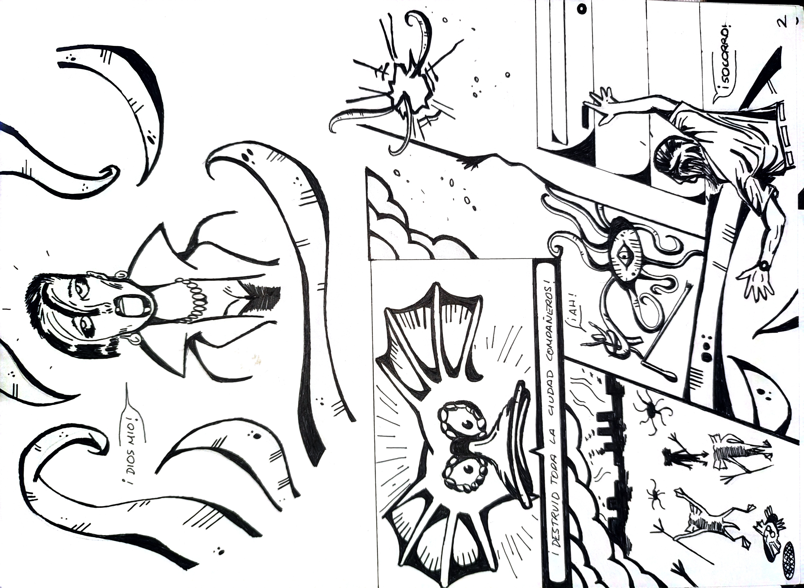
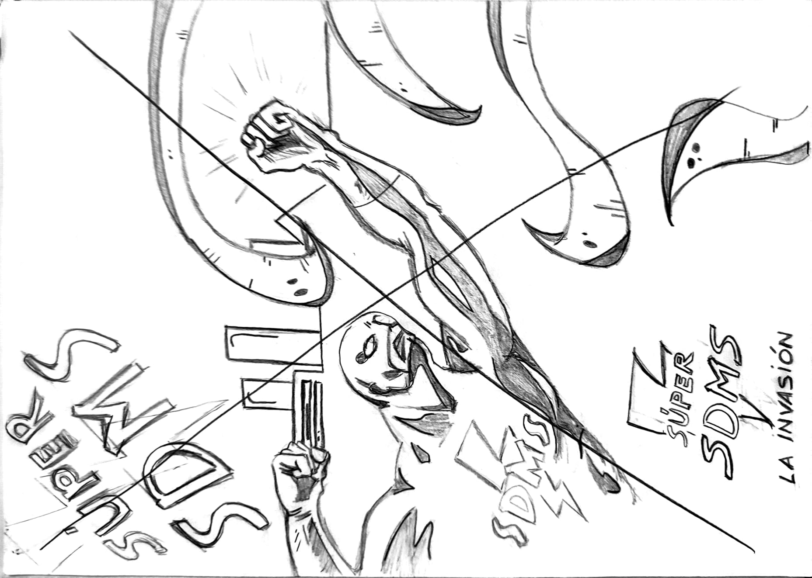
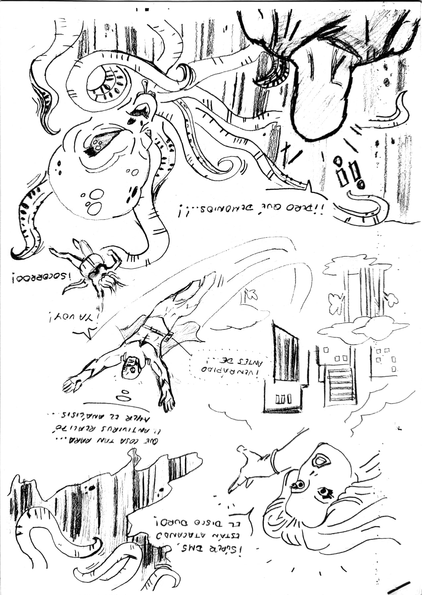

Process
Intermediate sketches, composition tests, and evolution toward the final comic pages.


Super SDMS is a promotional comic project developed for Hewlett‑Packard in December 2001, focused on cybersecurity and protection against computer viruses. The goal was to communicate technical concepts in a visual, fast, and appealing way, using a superhero-inspired style with vibrant colors and minimal text.
The comic was distributed together with promotional chocolates at two major events: the SIMO fair in Madrid and the Fira / Zoo Aquarium in Barcelona. Its striking aesthetics and direct narrative made it a highly effective promotional material.
The project was created by two people, each contributing 50%. I was responsible for the drawing, aesthetics, visual narrative, and composition, while the digital work and final layout were developed using tools of the time such as Dreamweaver.
Due to the success of the first comic, a second project was developed, this time fully web‑oriented, expanding the Super SDMS universe and adapting it to early‑2000s digital formats.
Early ideas, page composition tests, and character design.


Intermediate sketches, composition tests, and evolution toward the final comic pages.

Finished versions of the Super SDMS comic, ready for printing and exhibition.